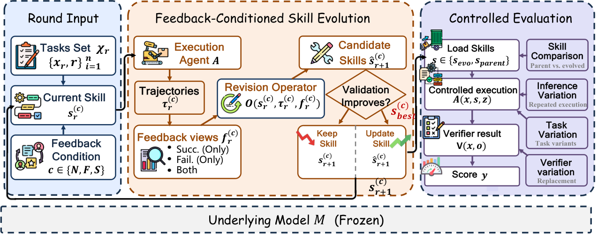
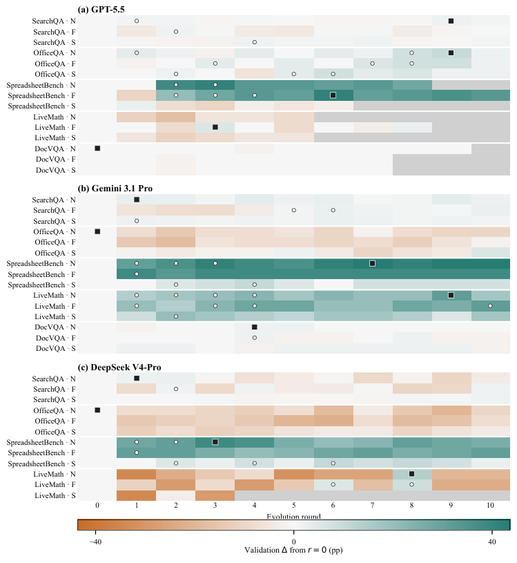

Rethinking Self-Evolving Agent Skills: Evolution as Sparse, Validation-Filtered Search
TL;DR
- "Rethinking Self-Evolving Agent Skills: Feedback Dynamics over Multiple Rounds" (arXiv 2608.02636; Yuxuan Liu, Zhaochen Su, Yuhao Zhang, and 9 more, incl. Haoran Li and Yangqiu Song) runs 42 controlled skill-evolution runs across 14 model×benchmark settings and finds evolution is sparse: of 388 candidate skill revisions, only 55 (14.2%) set a byte-distinct new validation best, and only 11 evolved skills are ultimately selected.
- Feedback composition is decisive: all 11 selected evolved skills were trained with failure trajectories in the feedback (Normal in 9 settings, Fail-only in 2, Success-only in 0). Failure-containing feedback yields new bests at 16.5% vs 9.1% for success-only.
- Against oracle test-time-scaling controls, results split: on SearchQA parallel sampling nearly recovers the evolved skill's gain (77.5 vs 77.9), but on SpreadsheetBench the evolved skill (85.8) beats oracle parallel sampling (54.8) by ~31 points — genuine skill learning exists, but it is benchmark- and model-dependent.
Why this matters
Half of this tracker is systems that promise compounding self-improvement: run, reflect, revise the skill, repeat. This paper is the first controlled accounting I've seen of what those loops actually do round by round, and the answer deflates the compounding story without killing it. Most proposed revisions don't survive validation; runs stagnate, regress, and roll back; and when evolution works, it works because the optimizer saw failures to push against. That reframes skill self-evolution from "gradient ascent in prompt space" to search with a validation gate and rollback — the value is not in iterating more but in proving, per edit, that the change deserves to persist. It also lands directly on this week's live debate (the tracked argument that self-evolving loops are just test-time scaling in disguise): here, with matched budgets, oracle parallel sampling recovers the gain on one benchmark and misses by 31 points on another. Both sides are right somewhere — which means "did you beat a TTS control?" should become a mandatory ablation for every self-evolving-agent paper, and this paper shows how to run it.

Figure 1 from the paper: each round executes the current skill, constructs a feedback view (Normal / Fail-only / Success-only), and proposes a candidate; the validation gate decides the next-round skill and updates the best checkpoint only on strict improvement, which is then frozen for controlled evaluation.The core idea
Fix the model and the harness; let only a skill — a persistent text artifact injected into the agent — evolve across rounds. The agent \( \mathcal{A} \) produces output \( o \) for task \( x \) given skill \( s \) and context \( z \), and a benchmark verifier \( \mathcal{V} \) labels success:
Each round \( r \), an optimizer \( \mathcal{O} \) proposes a candidate revision from the current skill, the round's trajectories \( \tau^r \), and a feedback view \( f^r \):
(notation follows the paper, lightly re-typeset). The experimental question is not "does this improve the benchmark?" but "what are the dynamics?": how often are candidates accepted, which feedback composition (successes, failures, or both) produces keepable edits, when in the run do improvements arrive, and does the frozen final skill survive robustness/transfer evaluation and test-time-scaling controls.
How it works
Setup. Five benchmarks — SearchQA (web-snippet QA), OfficeQA (Treasury-bulletin QA), SpreadsheetBench (spreadsheet manipulation), LiveMath (theorem reasoning), DocVQA (document QA) — crossed with three models (GPT-5.5, Gemini 3.1 Pro, DeepSeek V4-Pro), giving 14 primary settings (DeepSeek–DocVQA excluded for endpoint image constraints). Each feedback run executes 40 training trajectories per round (36 for LiveMath); the verifier labels each success/failure.
Three feedback views. From the same trajectories, three conditions are constructed: Normal (successes + failures), Fail-only, and Success-only. The revision optimizer may propose at most four minimal, task-general edits per round. Runs stop at ten rounds, five consecutive regressions/no-ops, or an empty feedback pool.
Validation gate and rollback. A candidate becomes the next round's skill only if validation does not decrease; otherwise the incumbent is retained. The best checkpoint updates only on strict validation improvement, and new-best counting requires byte-distinct artifacts (byte-identical reruns are treated as execution variability, not evolution).
Controlled post-evolution evaluation. The selected best skill is frozen and evaluated on the released test set, on robustness variations (R1–R3: surface, context, contract), and on transfer (T1–T3: new tasks, sources, distribution shifts). For GPT-5.5, matched-budget test-time-scaling controls are added: Parallel Sampling (oracle any-success over K independent attempts with the parent skill) and Sequential Refinement (K retries, each conditioning on the prior response).
# One evolution run (condensed from the paper)
s_0 = parent skill; best = s_0
for round r in 1..10:
run 40 training trajectories with s_r # 36 for LiveMath
label each success/fail via benchmark verifier
f_r = feedback view: Normal | Fail-only | Success-only
s_hat = Optimizer(s_r, trajectories, f_r) # <= 4 minimal, task-general edits
v = validation(s_hat)
if v >= validation(s_r): s_{r+1} = s_hat # gate: no decrease
else: s_{r+1} = s_r # rollback
if v > validation(best) and bytes(s_hat) != bytes(best):
best = s_hat # byte-distinct new best
stop if 5 consecutive regressions/no-ops or feedback pool empty
freeze best; evaluate: released test, R1-R3 robustness, T1-T3 transfer,
and (GPT-5.5) matched-budget parallel-sampling / sequential-refinement controls
Results
Sparsity. 42 runs produced 388 candidates; 55 established byte-distinct validation bests (14.2% yield). Across the 14 settings, 11 evolved skills were selected; in 3 settings the parent skill was retained outright. Modification is frequent, accepted improvement is rare — the process is dominated by rejected and rolled-back edits.
Failures are the signal. Every one of the 11 selected skills came from feedback that included failed trajectories: Normal won in 9 settings, Fail-only in 2, Success-only in 0. Pooled, failure-containing feedback produced 44 new bests from 267 candidates (16.5%) vs 11 from 121 (9.1%) for success-only. The authors' explanation: successes "provide no direct contrast for identifying what must be corrected" — failure is what tells the optimizer where the skill is wrong, while success mainly protects existing capability.
Selected skills mostly generalize. Of the 11 evolved skills: 9 improve the released test set, 9 improve robustness, 9 improve transfer, 7 improve both robustness and transfer — evolution under a validation gate is not just overfitting the validation set, though the exceptions are why the gate alone isn't sufficient evidence.
Test-time-scaling controls cut both ways. For GPT-5.5: SearchQA parent 75.6 → evolved 77.9, while oracle parallel sampling reaches 77.5 (gap 0.43 — sampling essentially recovers it). SpreadsheetBench parent 50.5 → evolved 85.8, while oracle parallel reaches only 54.8 (gap 30.96). Sequential refinement recovered neither gain. Timing: 38/55 new bests arrive in rounds 1–4, but 6 of the 11 selected skills appeared in rounds 6–9 — late discoveries after many rejections are real, just inconsistent.

Figure from the paper's appendix: lifecycle attribution of evolution events — candidates evaluated, byte-distinct validation bests, and benchmark-level selections across the Normal/Fail-only/Success-only feedback views.How it connects
- Self-evolving loops as test-time scaling (tracked this week, from @zhuokaiz's thread): that argument says matched-budget sampling explains away harness/skill evolution gains. This paper ran exactly that control and split the verdict — SearchQA supports it, SpreadsheetBench's 31-point residual refutes it. The reconciliation: evolution pays off where a persistent procedural fix (e.g., spreadsheet manipulation contracts) beats response diversity.
- HiSME / SkillHone / SkillRise (tracked): the skill-evolution systems in this list report endpoint gains; this paper's round-level accounting suggests their iteration counts matter less than their acceptance gates, and that their reflection prompts should be fed failures, not success summaries.
- Who&When Pro failure attribution (tracked): failure trajectories are only useful if the optimizer can localize why a run failed — that benchmark showed models are weak at exactly this, which may explain why even fail-fed evolution accepts only ~1 in 6 candidates.
- Reliable self-evolving agents (tracked): converges on the same design conclusion from the safety side — self-modification needs validation-gated commits and rollback, i.e., version control semantics, not free-running mutation.
Critical take
The framing — evolution as sparse, validation-filtered search — is the paper's real contribution, and it's convincing because the accounting is conservative (byte-distinct counting, strict-improvement checkpoints). But mind the scale: 40 trajectories per round is a small feedback pool, and acceptance decisions ride on validation sets small enough that the paper itself observes validation-to-test rank divergence; some of the 14.2% "yield" is plausibly noise passing the gate, and some rejected candidates were plausibly good. The TTS control is oracle any-success, which overstates what real parallel sampling delivers (a practical selector would score below the oracle), so the SpreadsheetBench gap is if anything understated — but the control ran only on GPT-5.5, so the headline split rests on one model. The optimizer is capped at four minimal edits per round, which builds in the sparsity conclusion to some degree: larger or structural rewrites might change the dynamics entirely (inferred from the setup — verify the paper's discussion of edit constraints). And nothing here measures cost: ten rounds × 40 trajectories × validation reruns is a big bill for 11 keepable skills across 14 settings. What I'd want next: the same accounting applied to harness/code evolution rather than text skills, and acceptance gates that use failure-attribution quality as a first-class signal.
If you remember three things
- Skill self-evolution is not steady improvement — it's search: 388 candidates → 55 byte-distinct validation bests → 11 selected skills. Design loops around the gate and rollback, not the iteration count.
- Feed the optimizer failures. All 11 selected skills used failure trajectories; success-only feedback never won a setting (16.5% vs 9.1% new-best yield). Successes preserve capability; failures locate what to fix.
- Always run a matched-budget test-time-scaling control: sampling recovered the SearchQA gain (77.5 vs 77.9) but missed SpreadsheetBench by ~31 points — that single ablation separates real skill learning from repackaged pass@k.